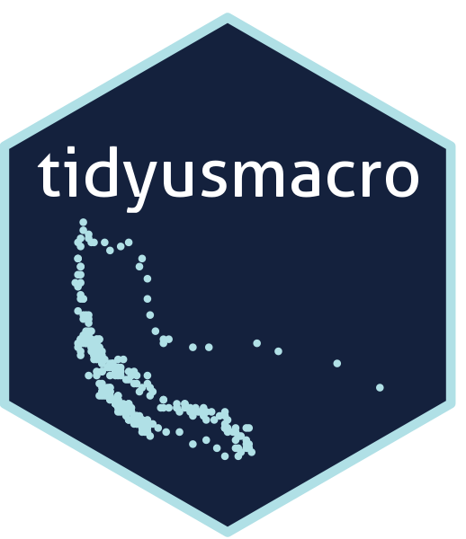
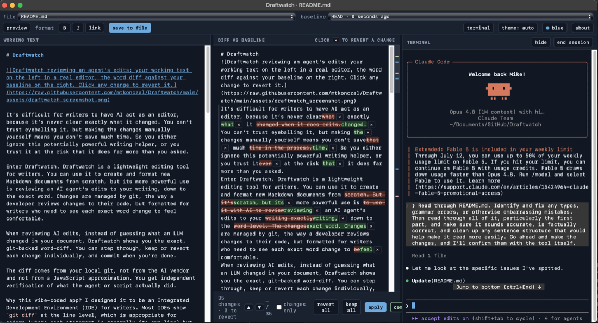

43%
0
1,000 jobs, 12-m change
Health care
Other
Nov 2023
Oct 2026
Vice President of Policy and Research, Economic Security Project · Former White House chief economist
Mike Konczal is the Vice President of Policy and Research at the Economic Security Project, which works to build economic power for all Americans. Previously, he served as Special Assistant to the President for Economic Policy and Chief Economist at the National Economic Council.
A former software and financial engineer, he was an early hire at the Roosevelt Institute, where he led major projects on financial reform, inequality, economic ideas, and macroeconomics. He is the author of Freedom from the Market (New Press, 2021), described by the Financial Times as “a powerful polemic,” and co-author of Rewriting the Rules of the American Economy (W.W. Norton, 2015) with Joseph Stiglitz. He holds a B.A. in math and computer science and an M.S. in finance from the University of Illinois at Urbana-Champaign.
Specializing in economic data analysis, he writes and speaks widely on U.S. economic policy, is regularly cited in major national outlets, and has testified before Congress. The New York Times Magazine has described him as having “a cult following among progressives.” Born and raised in Chicago, he now lives in Takoma Park, Maryland, with his wife, two daughters, and pit bull.
Data I’m watching
New here? These are the pieces that best explain what I work on.
My Substack is where I test-run economic analysis before it becomes a report.
Recent posts:
Packages and apps I build and maintain, for economic data analysis and for writing.

An R package that downloads and tidies U.S. macroeconomic data from BLS, BEA, and FRED flat files, returning consistent data frames ready for modeling and graphics seconds after a release goes live.
Package site & function reference
A lightweight IDE for writers to review an AI agent's edits like a pull request: the exact git-backed word diff of what changed, with each change kept or reverted at a click.
About Draftwatch“Konczal is one of the warriors in this fight, arguing fiercely for the need to set much narrower limits on what is left to markets than has been the case in recent decades. A powerful polemic.”
— Martin Wolf, Financial Times
“By identifying an alternative grammar, one that is grounded in the American past, Freedom from the Market provides a way out of the political cul-de-sac created by the failure of the market to deliver on its promises of ‘freedom.’”
— Molly Michelmore, Democracy: A Journal of Ideas
“Freedom from the Market is an impressive book, easily one of the best I’ve read in the past several years. I cannot recommend it highly enough.”
— Matt Mazewski, Commonweal
“terrific book.”
— Jamelle Bouie, New York Times